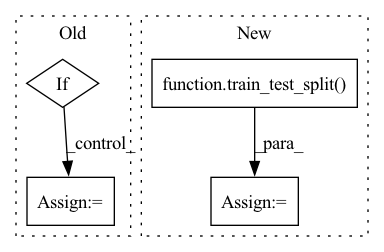

Pattern ID :35107

Before Change
)
// images, labels, img_names, class_array = shuffle(images, labels, img_names, class_array)
if isinstance(validation_size, float):
validation_size = int(validation_size * images.shape[0])
validation_images = images[:validation_size]
validation_labels = labels[:validation_size]
After Change
train_path, image_size, classes
)
train_images, validation_images = train_test_split(images, test_size=test_size)
train_labels, validation_labels = train_test_split(labels, test_size=test_size)
train_img_names, validation_img_names = train_test_split(img_names, test_size=test_size)
train_cls, validation_cls = train_test_split(class_array, test_size=test_size)
In pattern: SUPERPATTERN
Frequency: 3
Non-data size: 4
Instances
Fragment ID: 100172623
Project Name: abdullahselek/plant-disease-classification-pytorch
Commit Name: a92a7da0fb66cc6c0667a4cb6aa3ccef4d3fe556
Time: 2020-11-09
Author: abdullahselek@gmail.com
File Name: plant_disease_classification_pytorch/data_generator.py
M Class Name: AnonimousClass
N Class Name: AnonimousClass
M Method Name: read_datasets(4)
N Method Name: read_datasets(4)
M Parent Class:
N Parent Class:
M File Name: plant_disease_classification_pytorch/data_generator.py
N File Name: plant_disease_classification_pytorch/data_generator.py
M Start Line: 70
M End Line: 81
N Start Line: 69
N End Line: 72
'>
Before Change
DUMMY_IAM_ROLE = "arn:aws:iam::111111111111:role/service-role/AmazonSageMaker-ExecutionRole-20200101T000001"
def download_training_and_eval_data():
if os.path.isfile("./data/iris.csv"):
print("Training and dataset exist. Skipping Download")
else:
print("Downloading training dataset")
// Load Iris dataset, then join labels and features
iris = datasets.load_iris()
joined_iris = np.insert(iris.data, 0, iris.target, axis=1)
// Create directory and write csv
After Change
os.makedirs("./data/validation", exist_ok=True)
os.makedirs("./data/test", exist_ok=True)
train, other = train_test_split(dataset, test_size=0.3)
validation, test = train_test_split(other, test_size=0.5)
np.savetxt("./data/train/california_train.csv", train, delimiter=",")
np.savetxt("./data/validation/california_validation.csv", validation, delimiter=",")
'>
Fragment ID: 100172625
Project Name: aws-samples/amazon-sagemaker-local-mode
Commit Name: efd41fdf25974adc6919191c42417092f4ab25a8
Time: 2022-12-13
Author: frpaolo@amazon.com
File Name: scikit_learn_script_mode_local_training_and_serving/scikit_learn_script_mode_local_training_and_serving.py
M Class Name: AnonimousClass
N Class Name: AnonimousClass
M Method Name: download_training_and_eval_data(0)
N Method Name: download_training_and_eval_data(0)
M Parent Class:
N Parent Class:
M File Name: scikit_learn_script_mode_local_training_and_serving/scikit_learn_script_mode_local_training_and_serving.py
N File Name: scikit_learn_script_mode_local_training_and_serving/scikit_learn_script_mode_local_training_and_serving.py
M Start Line: 24
M End Line: 38
N Start Line: 39
N End Line: 56
'>
Before Change
shuffle_after_epoch=random_shuffle,
labels=labels,
)
elif encode_indexes_into_labels:
labels = sorted(Path(entry.name) for entry in os.scandir(data_path) if entry.is_dir())
data = [
(data_path / label / file, label_idx)
for label_idx, label in enumerate(labels)
for file in sorted(os.listdir(data_path / label))
]
files = []
labels = []
// for debugging
true_labels = []
After Change
from sklearn.model_selection import train_test_split
files, _, labels, _ = train_test_split(
files, labels, train_size=data_fraction, stratify=labels, random_state=42
)
self.reader = ops.readers.File(
files=files,
labels=labels,
shard_id=shard_id,
'>
Fragment ID: 100172626
Project Name: vturrisi/contrastive-learning
Commit Name: 5a1c1e3e03b99bfedfc219fb6eed2b8661264aa3
Time: 2022-04-12
Author: vt.turrisi@gmail.com
File Name: solo/utils/dali_dataloader.py
M Class Name: PretrainPipeline
N Class Name: PretrainPipeline
M Method Name: __init__(15)
N Method Name: __init__(14)
M Parent Class: Pipeline
N Parent Class: Pipeline
M File Name: solo/utils/dali_dataloader.py
N File Name: solo/utils/dali_dataloader.py
M Start Line: 554
M End Line: 598
N Start Line: 540
N End Line: 633